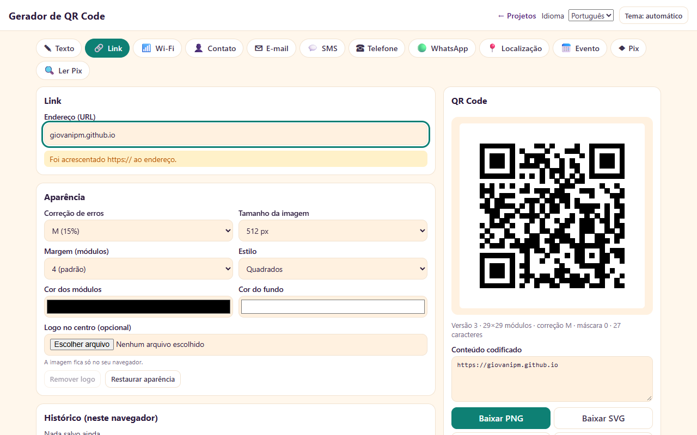
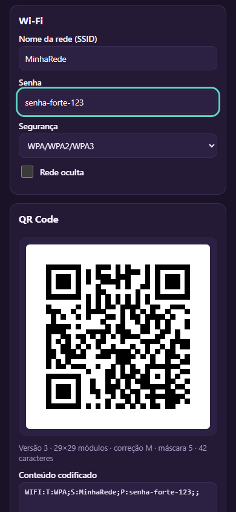
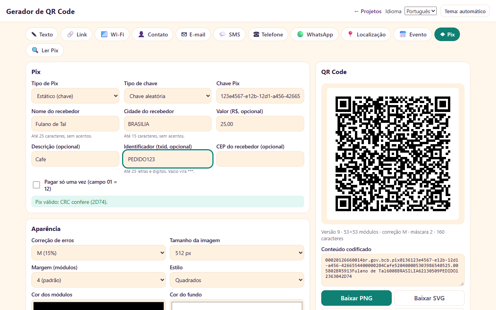
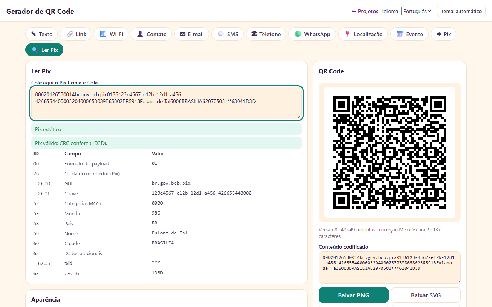
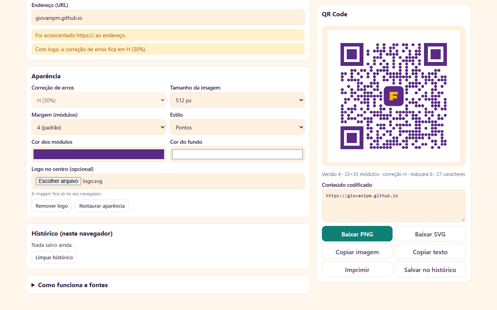

O app
O gerador é uma página única que transforma um texto, um link, os dados de uma rede Wi-Fi, um contato ou uma cobrança Pix num QR Code, sem enviar nada para a internet. [1] A página proíbe conexões de rede pela própria política de segurança, e o histórico fica só no seu navegador.
- 12 abas: texto, link, Wi-Fi, contato, e-mail, SMS, telefone, WhatsApp, localização, evento, Pix e Ler Pix.
- Saídas: imagem PNG de 256 a 2048 pixels, vetor SVG, cópia da imagem ou do texto, e impressão.
- Aparência: nível de correção de erros, margem, cores, três estilos de módulo e um logo no centro.

Como funciona um QR Code
O QR Code foi lançado em 1994 pela DENSO WAVE. [2] É uma grade de quadradinhos, os módulos, que vai da versão 1, com 21 × 21 módulos, à versão 40, com 177 × 177. [2] Quanto mais conteúdo, maior a versão.
![Um QR Code versão 2 com correção M, gerado pelo app para o texto giovanipm.github.io, com cada região colorida. Os três padrões de localização, com seus separadores, ficam em três cantos. O padrão de alinhamento fica perto do canto inferior direito. As linhas de sincronismo ligam os padrões de localização. A informação de formato, que guarda o nível de correção e a máscara, fica ao lado dos padrões. O resto são 28 palavras-código de dados e 16 de correção de erros, em volta há uma margem de 4 módulos.](rc_images/QRAnatomia.svg)
- Padrões de localização: os três quadrados grandes nos cantos. Mostram ao leitor onde está o código e em que ângulo.
- Padrões de alinhamento e linhas de sincronismo: ajudam a corrigir a perspectiva e a contar os módulos.
- Informação de formato: diz qual nível de correção e qual máscara foram usados.
- Dados e correção de erros: o conteúdo vem em palavras-código de 8 bits, seguidas de palavras extras que permitem recuperar partes sujas ou rasgadas. O método é o de Reed-Solomon. [2]
- Máscara: um de 8 padrões que inverte módulos para evitar manchas e listras que confundiriam o leitor. O app testa as 8 e fica com a de menor penalidade.
- Margem: uma faixa clara de 4 módulos em volta, necessária para o uso real. [2]
Há quatro níveis de correção: L, M, Q e H. A DENSO WAVE diz que o M recupera 15% das palavras-código e é o mais escolhido, e dá o Q como exemplo de 25%. [2] O app mostra 7% para o L e 30% para o H, os valores usuais; eles estão numa tabela em imagem no site da DENSO WAVE, que não pôde ser lida.
O conteúdo é gravado num de três modos: numérico (só dígitos), alfanumérico (maiúsculas, dígitos e alguns símbolos) ou byte (qualquer texto, em UTF-8). Medido com o app, o maior QR Code, a versão 40 com nível L, aceita 7.089 dígitos, 4.296 caracteres alfanuméricos ou 2.953 bytes; um caractere a mais é recusado.
↑ Voltar ao topoPasso a passo: o primeiro QR Code
- Escolha a aba do tipo de conteúdo. As setas do teclado também mudam de aba.
- Preencha os campos. O QR Code aparece à direita, ou logo abaixo do formulário no celular, a cada tecla. Se faltar algo, uma mensagem em vermelho diz o quê; avisos em amarelo dizem o que o app ajustou.
- Confira o conteúdo codificado embaixo do QR Code: é exatamente o texto que o leitor vai receber.
- Teste com o celular antes de imprimir ou divulgar: aponte a câmera para a tela.
- Baixe ou copie. O PNG serve para mensagens e documentos; o SVG é vetor e não perde qualidade em cartazes. Salvar no histórico guarda os campos para você voltar depois.
Os tipos de conteúdo
Cada aba monta o texto num formato que as câmeras dos celulares reconhecem e transformam numa ação: abrir um link, entrar numa rede, salvar um contato. Os exemplos abaixo são saídas do app, conferidas nos testes.
| Aba | O que o leitor faz | Exemplo do conteúdo gerado |
|---|---|---|
| Link | Abre o endereço | https://giovanipm.github.io |
| Wi-Fi | Oferece entrar na rede | WIFI:T:WPA;S:Casa\;1;P:a\:b;; |
| Contato | Oferece salvar o contato | vCard 3.0, com nome, celular, e-mail, empresa e endereço |
| Abre um e-mail pronto | mailto:x@y.com?subject=Ol%C3%A1%20mundo&body=a%0D%0Ab | |
| SMS | Abre uma mensagem pronta | sms:+5551999990000?body=oi |
| Telefone | Oferece ligar | tel:+5551999990000 |
| Abre a conversa com o texto | https://wa.me/5551999990000?text=oi%20tudo | |
| Localização | Abre o mapa | geo:-30.0346,-51.2177 ou link do Google Maps |
| Evento | Oferece salvar na agenda | BEGIN:VEVENT com título, início, fim, local e descrição |
- Wi-Fi: barra invertida, ponto e vírgula, vírgula, aspas e dois-pontos no nome ou na senha recebem uma barra invertida antes, como manda o formato. [4] Para rede aberta, escolha Sem senha.
- Telefone, SMS e WhatsApp: números com 10 ou 11 dígitos recebem +55; para outro país, comece com +. O SMS segue o formato
sms:, em que o número internacional começa com + [5]; há também a opçãoSMSTO:, antiga, que a documentação do ZXing descreve apenas como “observada em uso”. [4] O WhatsApp pede o número completo, sem zeros, parênteses nem traços. [8] - E-mail: espaços viram
%20e quebras de linha viram%0D%0A. [6] - Localização: o formato
geo:usa latitude e longitude em graus decimais. [7] Alguns celulares abrem melhor o link do Google Maps, que o app também oferece.

Pix: estático, dinâmico e saque
O QR Code do Pix segue o padrão BR Code, que adota o padrão EMV de QR Codes para pagamentos. [3] O conteúdo é uma sequência de campos com identificador de 2 dígitos, tamanho de 2 dígitos e valor, terminada por um código de conferência, o CRC16. O texto inteiro é também o Pix Copia e Cola.
| Tipo | O que vai no QR Code | Quando usar |
|---|---|---|
| Estático | A chave Pix e, se quiser, valor, descrição e identificador (txid) | Cartaz no balcão, doação, cobrança simples. Pode ser pago várias vezes, a menos que você marque o uso único. |
| Pix Saque | Os dados do estático e o ISPB do facilitador de saque (campo 03) | Estabelecimentos que oferecem saque. O Pix Troco não existe em QR estático. [3] |
| Dinâmico | Uma URL do banco ou PSP do recebedor, sem https://, com até 77 caracteres | Cobranças com valor, vencimento e conciliação geradas pelo seu banco. O app só monta o QR com a URL que o banco criou. |

As regras que o app aplica vêm do manual do Banco Central, versão 2.10.0: [3]
- Chave: CPF e CNPJ só com os dígitos, celular no formato +55 com DDD, e-mail como digitado e chave aleatória com os traços. O app confere os dígitos verificadores de CPF e CNPJ numérico; no CNPJ alfanumérico, confere só o formato.
- Chave, descrição e saque disputam 99 caracteres no campo 26: a chave vai até 77 e a descrição até 72. Se a descrição não couber, o app a corta e avisa.
- txid: até 25 letras sem acento e dígitos. Vazio, vira
***, como manda o padrão. - Uso único: o campo 01 com valor 12 indica que o código não deve ser pago mais de uma vez.
- CRC16: polinômio 0x1021 e valor inicial 0xFFFF, calculado sobre todo o texto, incluindo o
6304final. - Nome e cidade: o app limita a 25 e 15 caracteres, como fazem os geradores de BR Code, e remove os acentos. Esses limites estão no Manual do BR Code, que não pôde ser consultado.
O app reproduz exatamente os dois exemplos do manual: o estático termina em 63041D3D, e o dinâmico, em 630464E4.
Ler e conferir um Pix
A aba Ler Pix recebe um Pix Copia e Cola, recalcula o CRC e mostra cada campo numa tabela. Serve para conferir um código antes de divulgá-lo ou para entender um código que você recebeu. Se um caractere tiver sido trocado, o CRC deixa de conferir e o app mostra os dois valores, o esperado e o encontrado.

A leitura confere a estrutura e o CRC, não a conta: só o banco sabe se a chave existe e a quem pertence. Antes de usar um Pix para receber dinheiro, leia o QR Code no app do seu banco e confira nome, chave e valor na tela de confirmação, sem concluir o pagamento.
↑ Voltar ao topoAparência e tamanho
Mais correção de erros deixa o código mais resistente, mas também maior. A tabela mostra a versão e o número de módulos que o app escolheu para cinco conteúdos, medidos com o próprio codificador.
| Conteúdo | Caracteres | L | M | Q | H |
|---|---|---|---|---|---|
| 20 dígitos (modo numérico) | 20 | v1 · 21 | v1 · 21 | v1 · 21 | v2 · 25 |
| Link https://giovanipm.github.io | 27 | v2 · 25 | v3 · 29 | v3 · 29 | v4 · 33 |
| Wi-Fi com senha | 42 | v3 · 29 | v3 · 29 | v4 · 33 | v5 · 37 |
| Pix estático com valor e descrição | 160 | v8 · 49 | v9 · 53 | v11 · 61 | v13 · 69 |
| Contato completo (vCard) | 238 | v10 · 57 | v11 · 61 | v13 · 69 | v16 · 81 |
Para o mesmo tamanho impresso, mais módulos significam módulos menores e mais difíceis de ler de longe. O nível M, o padrão do app, é um bom equilíbrio.

- Logo: cobre cerca de 22% da largura do código, e o app força o nível H para compensar os módulos escondidos. A imagem fica só no navegador.
- Cores: módulos escuros sobre fundo claro. O app avisa quando o contraste é baixo ou quando os módulos ficam mais claros que o fundo, o que muitos leitores não aceitam.
- Estilos: pontos e cantos arredondados mudam só o desenho; os padrões de localização continuam quadrados.
- Margem: o padrão de 4 módulos é o recomendado; o app avisa quando você diminui.
Como o app foi testado
- Codificador: comparado com o pacote
qrcodedo Node, um gerador independente. [9] Para 14 textos, dos só numéricos a emoji, nos 4 níveis e nas 8 máscaras, as 440 matrizes saíram idênticas módulo a módulo, e a versão e a máscara escolhidas automaticamente coincidiram nos 55 casos. - Pix: os dois exemplos do manual do Banco Central saem caractere por caractere iguais.
- Imagens: os pixels do PNG, do SVG e dos três estilos, lidos de volta no centro de cada módulo, conferem com a matriz.
- Interface: todas as abas foram usadas com cliques e teclado reais no Chrome, nos quatro idiomas e em 390 pixels de largura, sem erros nem requisições externas.
O que não foi testado: a leitura das imagens por um leitor de QR independente, celulares reais e apps de banco, e os navegadores Safari e Firefox.
↑ Voltar ao topoErros comuns
Imprimir sem testar
Leia o código com o celular antes de mandar para a gráfica, principalmente com cores, estilo ou logo.
Inverter as cores
Módulos claros em fundo escuro ficam bonitos, mas muitos leitores não leem. O app avisa.
Cortar a margem
Sem a faixa clara em volta, o leitor confunde o código com o que está ao redor.
Usar QR estático para cobranças com vencimento
Valor por vencimento, juros e conciliação automática são do Pix dinâmico, criado pelo banco.
Achar que o CRC certo garante o pagamento
O CRC só prova que o texto não foi alterado. Confira nome e chave no app do banco.
Colocar acentos no nome do Pix
O app remove os acentos e avisa, para cada caractere contar um byte no tamanho dos campos.
Revisão rápida
Em resumo
- QR Code: módulos em grade, de 21 × 21 a 177 × 177, com padrões de localização, dados e correção de erros.
- Correção M, margem de 4 módulos e cores escuras sobre fundo claro são os padrões seguros.
- Pix estático leva a chave; o dinâmico leva a URL do banco; o saque leva o ISPB do facilitador.
- Ler Pix confere a estrutura e o CRC, não a conta.
1. Por que o app passa a correção para H quando você põe um logo?
Porque o logo esconde módulos, e o nível H é o que mais permite recuperar partes faltantes.
2. Qual é o maior conteúdo que cabe num QR Code?
Na versão 40 com nível L, 7.089 dígitos, 4.296 caracteres alfanuméricos ou 2.953 bytes, medidos com o app.
3. O que significa um txid igual a ***?
Que o recebedor não usou identificador de transação nesse Pix estático.
4. Onde fica a URL num Pix dinâmico, e com que formato?
No campo 26, subcampo 25, sem https:// e com até 77 caracteres.
5. O CRC conferiu. O Pix está certo?
A estrutura está; a conta e o nome só o app do banco confirma.
Referências
- Gerador de QR Code, app deste site, em um único arquivo e sem rede.
- DENSO WAVE. QR Code.com: histórico, versões, correção de erros e perguntas frequentes. “QR Code” é marca registrada da DENSO WAVE INCORPORATED.
- Banco Central do Brasil. Manual de Padrões para Iniciação do Pix, versão 2.10.0, seções 2.4 a 2.7.
- ZXing. Barcode Contents: formatos de Wi-Fi, SMS, e-mail, telefone, localização, contato e evento.
- IETF. RFC 5724: o esquema de URI
sms:. - IETF. RFC 6068: o esquema de URI
mailto:. - IETF. RFC 5870: o esquema de URI
geo:. - WhatsApp. Como usar o recurso de conversa por clique.
- Pacote qrcode para Node.js, usado como referência independente nos testes.
![A version 2 QR code with correction level M, generated by the app for the text giovanipm.github.io, with each region coloured. The three finder patterns, with their separators, sit in three corners. The alignment pattern sits near the bottom right corner. The timing lines join the finder patterns. The format information, which stores the correction level and the mask, sits beside the finder patterns. The rest are 28 data codewords and 16 error-correction codewords; around it is a 4-module margin.](rc_images/QRAnatomia-en.svg)
![Un codice QR versione 2 con correzione M, generato dall’app per il testo giovanipm.github.io, con ogni regione colorata. I tre pattern di posizione, con i separatori, stanno in tre angoli. Il pattern di allineamento sta vicino all’angolo in basso a destra. Le linee di temporizzazione uniscono i pattern di posizione. L’informazione di formato, che contiene il livello di correzione e la maschera, sta accanto ai pattern. Il resto sono 28 parole di dati e 16 di correzione degli errori; intorno c’è un margine di 4 moduli.](rc_images/QRAnatomia-it.svg)
![Un código QR versión 2 con corrección M, generado por la app para el texto giovanipm.github.io, con cada región coloreada. Los tres patrones de posición, con sus separadores, están en tres esquinas. El patrón de alineación está cerca de la esquina inferior derecha. Las líneas de sincronización unen los patrones de posición. La información de formato, que guarda el nivel de corrección y la máscara, está junto a los patrones. El resto son 28 palabras de datos y 16 de corrección de errores; alrededor hay un margen de 4 módulos.](rc_images/QRAnatomia-es.svg)